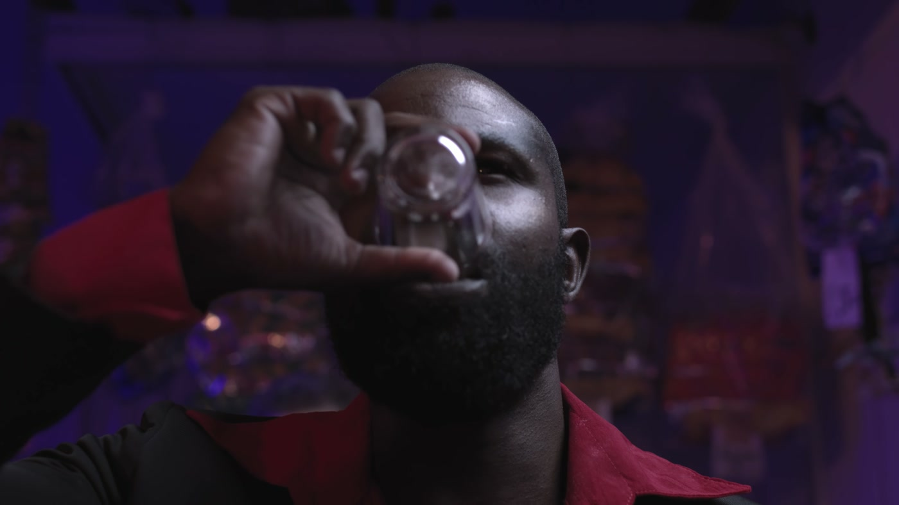
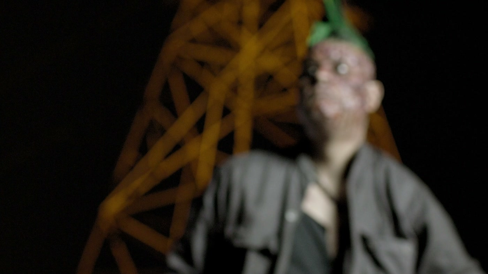

70
O FUNDO COLA
Teleobjetiva, longe. Sobra pouco mundo, e ele sobe nas costas da pessoa.
01 · ENCRUZILHADAS

O bar inteiro virou mancha roxa. Só existe o rosto dele
02 · ENCRUZILHADAS

A torre está longe, mas parece colada nele. É a compressão trabalhando
03 · APARTADA

O quarto sumiu. Sobrou a boca, a mão e mais nada
O QUE ISSO DIZA pessoa está sozinha com o que sente, e o mundo em volta parou de importar. É o plano do pensamento, do segredo, da dor. O lugar deixou de ser personagem.
pra ver depois · youtu.be/VlnwLGtgb1o
E não é a lente que deforma o rosto
É A DISTÂNCIA

FUNDO BRANCO · NENHUMA CAMADA ATRÁS
Pra encher o quadro com um rosto usando 28, eu preciso chegar perto. Perto, o nariz está mais próximo da câmera que a orelha, e aparece maior. Isso é distância, não é lente.
Pra encher o mesmo quadro usando 70, eu preciso afastar. E de longe tudo que está atrás encolhe a diferença e cola.
Repara no Leth: fundo branco não tem camada nenhuma. Ali a lente não tem o que comprimir. É por isso que aquele filme parece flutuar fora de qualquer lugar.